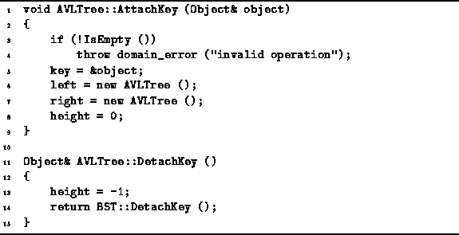

Data Structures and Algorithms
with Object-Oriented Design Patterns in C++
Data Structures and Algorithms
with Object-Oriented Design Patterns in C++
The procedure for removing items from an AVL tree
is inherited from the BST class in the same way as AVL insertion.
(See Program  ).
All the differences are encapsulated in the DetachKey and
Balance functions.
The Balance function is discussed above.
The DetachKey function is defined in Program
).
All the differences are encapsulated in the DetachKey and
Balance functions.
The Balance function is discussed above.
The DetachKey function is defined in Program

Program: AVLTree Class AttachKey and DetachKey Member Function Definitions
 Copyright © 1997 by Bruno R. Preiss, P.Eng. All rights reserved.
Copyright © 1997 by Bruno R. Preiss, P.Eng. All rights reserved.